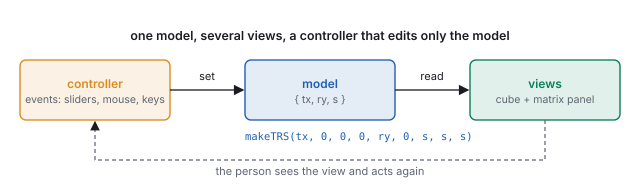
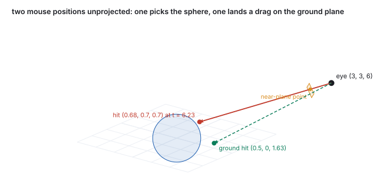
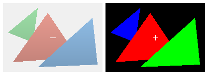
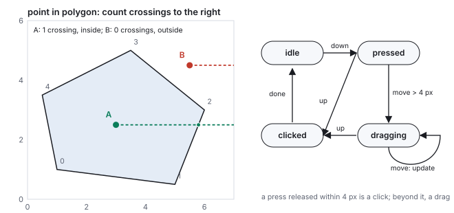
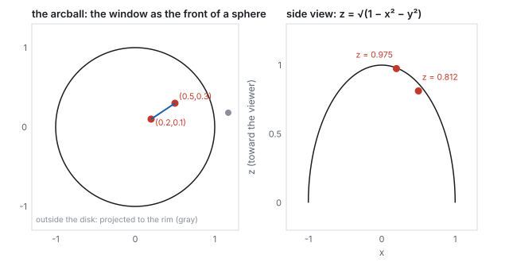
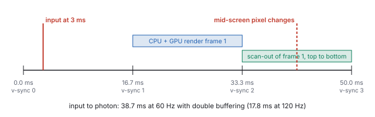

This chapter links to the course’s interactive demos and uses MathJax for its formulas. Read it through the course website (or download the file and open it in a browser); a Canvas inline preview will reach neither the demos nor the math. All chapters.
Douglas Engelbart showed the mouse, hypertext and live video conferencing in one 90-minute session on 9 December 1968, later called the Mother of All Demos. SRI International; Fall Joint Computer Conference, San Francisco, 1968
A renderer draws a frame. An interactive system draws a frame, waits for the person, and draws the next one differently. This chapter is about the second half. It starts with the loop and the discipline that keeps it sane, model–view–controller, illustrated by the course’s own transform demo, whose three numbers drive a cube and a matrix panel in lockstep. It then runs the viewing pipeline backward: a mouse position is a pixel, a pixel is a point in normalized device coordinates, and the inverse of the projection and view matrices turns it into a ray, worked on the same camera and pixel as the ray-tracing chapter so the two constructions can be checked against each other to four digits. That ray picks objects, or a rendered ID buffer does it in one read; it lands a dragged object on the ground plane; and two of them turn a mouse drag into a rotation by Shoemake’s arcball, worked to the quaternion. Between those, the chapter covers what a working tool needs and a renderer does not: the event types and the device-pixel ratio that silently breaks picking, hit testing in two dimensions, snapping, a drag gesture as a state machine, undo as a consequence of the model, and a fixed timestep that keeps a simulation honest under a varying frame rate. It ends with time: how many milliseconds pass between the click and the pixel, why, and what a head-mounted display does about it.
The frame loop of the rasterization chapter ran on a timer: read input, update, render, present, sixty times a second. Why a loop at all? A batch program, a compiler or an offline renderer drawing one film frame, has all its input before it starts, so it computes, writes and exits when the work is done. An interactive program cannot: its next input is a person’s reaction to its last output, which does not exist until the program has drawn it. The input also arrives over time and from several independent sources (mouse, keys, clock, network, the window system), and the picture must change even when nobody acts, because animations and simulations advance with time. A program meeting all of this must outlive every single input: it waits, responds, redraws, and repeats until the person quits. The quit is itself an input: the close button or a quit key arrives as an event, the loop reads it, cleans up and exits.
There are four ways to do the waiting, and three of them fail. A blocking read
(scanf, Console.ReadLine, the browser’s prompt) stops the
program until the next keystroke: nothing animates meanwhile, and it hears only one source, so a
program reading the keyboard cannot notice the mouse. Callbacks alone serve a form that
changes only when clicked, but anything that moves needs a timer event every frame, which is a loop
under another name. A thread per source hears everything but lets several threads change the
same state at the same moment, which brings races and locks. The frame loop collects every
source at one point in time, changes the state in one thread, in a known order, once per frame, and
then draws a picture of one consistent state. Its price is that an event can wait up to a frame, and
it matches the display, which refreshes at a fixed rate anyway.
The loop used to be written by hand: a Macintosh application of 1984 had its own main event loop
around the Toolbox call GetNextEvent, and a Windows program still has a message loop. A
console program’s
main calls what it needs and returns when it is done; an interactive program returns only when told to quit. It hands the
loop to a framework, and the framework calls the program’s functions: inversion of
control. The two homework tracks sit at different points on that line. Unity owns the whole
loop, its clock, its input and its rendering; a script is a set of methods, Start and
Update among them, that the engine finds by name and calls. The browser owns its event
loop but not the frame: the program registers event handlers and asks for each frame with
requestAnimationFrame, and the frame function it passes is its own. The consequence is
the same in both: the program’s code runs inside one frame’s slice, 16.7 ms at
60 Hz, and a function that computes for two seconds freezes the window for two seconds, 120
missed frames. Long work is split across frames or moved to another thread.
The smallest loop in each track turns a cube at 90° per second. The tabs switch between the tracks, here and in every listing of the course text and the slides; the choice is remembered.
using UnityEngine;
public class Spin : MonoBehaviour { // attach to the cube
public float degPerSec = 90f;
float angle; // the state
void Update() { // the engine calls this once per frame
angle += degPerSec * Time.deltaTime; // update: rate × seconds
transform.localRotation = Quaternion.Euler(0f, angle, 0f); // show the state
}
}
// no loop in this file: the engine runs it and calls Update by name
const degPerSec = 90;
let angle = 0, last = performance.now(); // the state, and the clock
function frame(now) { // the browser calls this once per refresh
const dt = (now - last) / 1000; last = now; // seconds since the last frame
angle += degPerSec * dt; // update: rate × seconds
cube.rotation.y = angle * Math.PI / 180; // show the state (three.js wants radians)
renderer.render(scene, camera); // draw
requestAnimationFrame(frame); // ask for the next frame
}
requestAnimationFrame(frame);
The programs differ only in who writes the loop. Unity’s Update is the body of a
loop the engine runs, and Time.deltaTime is the frame time the engine measured; the
browser passes a timestamp to the frame function, which computes the elapsed time itself and must
request the next frame, or the animation stops after one. At 60 Hz each frame turns the cube
1.5°, and after one second it has turned 90° at any frame rate.
Opened up, one frame runs in a fixed order. Unity reads the input state for the frame, runs as
many fixed physics steps as are due (FixedUpdate, the next section), calls every
script’s Update, then every LateUpdate, then renders every camera and
waits for the display. The browser runs the handlers of the input events that arrived, then the
requestAnimationFrame callbacks, then lays out and paints the page. In both, an event
that arrives while a frame is being computed is queued and seen at the start of the next one,
which is one source of the input latency of Section 10.
The loop has two variants. The continuous loop renders every frame whether or not anything changed, which a game needs because something always changes; Unity runs this one. The on-demand loop renders only when an event has changed the state: the course’s demos are built this way, and an idle demo draws nothing and uses no GPU, which is why a page with a dozen of them stays responsive. The two agree on the structure: an event (mouse, key, wheel, slider, timer, network) arrives, a handler edits the state, and a render is requested. What no correct program does is draw in the event handler: the handler changes state and asks for a frame, and the frame reads the state.
Input comes in two kinds. A key that is held is state; a key that was pressed is an
event. Continuous control, moving while a key is down, needs the state in every frame. Unity polls
it: Input.GetKey answers whether the key is down now, and GetKeyDown is true
only in the frame it went down. The browser delivers only events, so the program keeps the state
itself, a set of held keys that the handlers maintain and the frame reads.
public float speed = 4f;
float x; // the state
void Update() {
float dir = 0f;
if (Input.GetKey(KeyCode.D)) dir += 1f; // held: polled every frame
if (Input.GetKey(KeyCode.A)) dir -= 1f;
x += dir * speed * Time.deltaTime;
if (Input.GetKeyDown(KeyCode.Space)) x = 0f; // pressed this frame: once
transform.localPosition = new Vector3(x, 0f, 0f);
}
const held = new Set(); // keys down right now
addEventListener('keydown', (e) => {
held.add(e.code);
if (e.code === 'Space' && !e.repeat) x = 0; // a press: handled once
});
addEventListener('keyup', (e) => held.delete(e.code));
addEventListener('blur', () => held.clear()); // released in another window
function frame(now) {
const dt = (now - last) / 1000; last = now;
const dir = (held.has('KeyD') ? 1 : 0) - (held.has('KeyA') ? 1 : 0); // held: polled
x += dir * speed * dt;
ship.position.x = x;
renderer.render(scene, camera);
requestAnimationFrame(frame);
}
Holding D for half a second moves the ship 2 units at any frame rate. The browser version avoids two
traps. Moving inside the keydown handler would move at the operating system’s
auto-repeat rate, which begins after a delay and differs between machines; the
repeat test keeps the one-shot action to one press. And a key released while the
window is in the background never sends keyup, so losing focus clears the set.
Simulation that must advance in real time runs on a fixed timestep inside the loop, as the next
section works out, independent of how often frames are drawn.
The animation chapter showed that an integrator’s behavior depends on its step. A loop that steps the simulation by the measured frame time therefore behaves differently at 30 and at 144 frames per second, and differently again when a frame stalls: a spring that is stable at 16 ms can explode at 100. The remedy is to decouple the two clocks.
In code, the browser track writes the accumulator itself; in Unity the engine owns it, calls
FixedUpdate from its inner loop and Update once per frame, and the script
keeps the last two states and interpolates. Time.time minus Time.fixedTime
is the carry; a Rigidbody set to Interpolate does the same thing internally.
public float speed = 3f;
float prev, curr; // the last two fixed states
void FixedUpdate() { // Unity's while loop: 0, 1 or more per frame
prev = curr;
curr += speed * Time.fixedDeltaTime; // always exactly 0.02 s
}
void Update() { // once per frame: draw between the two
float alpha = (Time.time - Time.fixedTime) / Time.fixedDeltaTime;
float x = Mathf.Lerp(prev, curr, alpha); // Lerp clamps alpha to [0, 1]
transform.localPosition = new Vector3(x, 0f, 0f);
}
const DT = 0.010; // fixed step, seconds
let acc = 0, last = performance.now() / 1000;
let prev = initialState(), curr = prev;
function frame(nowMs) {
const now = nowMs / 1000;
acc += Math.min(now - last, 0.25); // clamp a stall (the spiral of death)
last = now;
while (acc >= DT) { // run every whole step that fits
prev = curr;
curr = step(curr, DT);
acc -= DT;
}
draw(lerp(prev, curr, acc / DT)); // alpha = carry / step
requestAnimationFrame(frame);
}
requestAnimationFrame(frame);
Start with a tool built without a decision about where its state lives: a scale slider, a number
box, and the = key, which doubles the scale. Each handler updates everything it can
reach.
public Transform cube; public Slider slider; public InputField box; // one number, three copies
void Start() {
slider.onValueChanged.AddListener(v => {
cube.localScale = Vector3.one * v; // copy 1
box.text = v.ToString("0.00"); // copy 3
});
box.onEndEdit.AddListener(t => {
float v = float.Parse(t);
cube.localScale = Vector3.one * v;
slider.value = v; // copy 2; fires onValueChanged: the handler above
});
}
void Update() {
if (Input.GetKeyDown(KeyCode.Equals))
cube.localScale *= 2f; // slider and box keep the old value
}
slider.addEventListener('input', () => {
const v = +slider.value;
cube.scale.setScalar(v); box.value = v.toFixed(2); render(); // copies 1 and 3
});
box.addEventListener('change', () => {
const v = parseFloat(box.value);
cube.scale.setScalar(v); slider.value = v; render(); // copies 1 and 2
});
addEventListener('keydown', (e) => {
if (e.key === '=') { cube.scale.multiplyScalar(2); render(); } // slider, box stale
});
The scale now exists in three places, the cube, the slider and the box, and every way of changing it
must update all three. The key handler forgets two. Move the slider to 1.5 and all three read 1.5;
press = and the cube is at 3 while the slider and the box still say 1.5; nudge the slider
to 1.6 and the cube jumps from 3 down to 1.6, because the slider never saw the doubling. Every handler
also draws, so two events in one frame draw twice, and in Unity setting slider.value
from code fires the slider’s own listener, so the handlers call each other. With \(n\) ways to
change a value and \(m\) places that show it, there are \(n \times m\) updates to keep right.

The same tool with the state in one place:
public Transform cube; public Slider slider; public InputField box;
float s = 1f; // the MODEL: one copy
void Start() { // CONTROLLERS edit the model
slider.onValueChanged.AddListener(v => s = v);
box.onEndEdit.AddListener(t => { if (float.TryParse(t, out float v)) s = v; });
}
void Update() { if (Input.GetKeyDown(KeyCode.Equals)) s *= 2f; }
void LateUpdate() { // VIEWS read the model
cube.localScale = Vector3.one * s;
slider.SetValueWithoutNotify(s); // no event back to a controller
if (!box.isFocused) box.SetTextWithoutNotify(s.ToString("0.00"));
}
const model = { s: 1 }; // the MODEL: one copy
slider.addEventListener('input', () => { model.s = +slider.value; requestRender(); });
box.addEventListener('change', () => { // CONTROLLERS edit the model
const v = parseFloat(box.value);
if (Number.isFinite(v)) model.s = v;
requestRender();
});
addEventListener('keydown', (e) => { if (e.key === '=') { model.s *= 2; requestRender(); } });
function view() { // VIEWS read the model
cube.scale.setScalar(model.s);
slider.value = model.s; // setting .value fires no event
if (document.activeElement !== box) box.value = model.s.toFixed(2);
renderer.render(scene, camera);
}
Each controller is one line that edits the model and knows nothing of the views; one view function
writes the model into the cube and both widgets, so after the key all three read 3. Three
controllers and three views are six pieces instead of nine connections. Two details carry the
pattern. A view that writes into a widget must not trigger that widget’s controller, or a view
update becomes an edit: Unity’s UI fires its listeners when value is set from
code, hence the WithoutNotify setters, while the browser fires no input
event for an assignment. And the view leaves the box alone while the person is typing in it, or
every frame would overwrite a half-typed number. A slider also clamps to its range; the box still
shows the true value, because the model is not limited by any one view.
Why split a program this way? Four forces favor it. Consistency: when every display is computed from one state, agreement is automatic, and \(n\) ways to edit plus \(m\) displays make \(n + m\) pieces instead of \(n \times m\) connections. Rates of change: the math at the center of a graphics tool changes rarely, while widgets, layouts and input devices change with every release, and keeping them apart means an interface change cannot break the math. Independence from the screen: the model can be saved, replicated over a network, replayed and tested without any view, which is how this course grades both homework tracks by running the model math and comparing numbers. Replaceability: the Unity and WebGL tracks are two sets of views and controllers on one specification. The cost is one indirection per edit and more structure than a 50-line prototype needs.
MVC is the oldest member of a family; the members differ mainly in who translates between the person and the state.
| architecture | the idea | where it is used |
|---|---|---|
| no separation | handlers edit widgets and draw | prototypes; the tool without a model above |
| model–view–presenter | a presenter holds all the logic; the view only displays and forwards, so the logic can be tested with a stand-in view | Taligent (mid-1990s); many desktop and Android applications |
| model–view–viewmodel | the view binds to a view model’s properties, and the framework copies changes in both directions | Microsoft’s WPF (2006), .NET MAUI |
| one-way data flow | events become messages; a pure update(state, message) returns the next state; the view is a function of the state | the Elm architecture; React with Redux (2015) |
| immediate mode | the interface is redrawn from the model every frame, with no widget objects | Dear ImGui; engine debug panels |
| entity–component–system | simulation state in flat arrays of components, updated by systems once per frame, chosen for cache efficiency | game simulations; Unity’s DOTS |
Every row except the first keeps MVC’s core: the state in one place, and every display computed from it. One-way data flow makes undo and replay a list of messages; immediate mode suits a program that already redraws every frame; entity–component–system organizes the model itself, and is compatible with any of the others for the interface.
A change reaches the views in one of three ways. In a continuous loop nobody has to be told: the view runs every frame and reads whatever the model holds. When views are expensive, a dirty flag skips them in frames where nothing changed. In an on-demand loop the flag is the frame request itself: the first edit in a frame requests an animation frame, later edits find it pending, and the frame draws once with all of them applied. The third way, Smalltalk’s, is notification: the model keeps a list of its views and tells each that it changed, the observer pattern.
float s = 1f; bool dirty = true; // the model, and "changed since drawn?"
public void SetScale(float v) { s = v; dirty = true; } // every controller calls this
void LateUpdate() {
if (!dirty) return; // unchanged: skip the views
dirty = false;
cube.localScale = Vector3.one * s;
label.text = s.ToString("0.00");
}
let pending = false;
function requestRender() { // any number of edits in one frame...
if (pending) return;
pending = true;
requestAnimationFrame(() => { pending = false; view(); }); // ...one render
}
In Unity, the engine already splits the work for poses: a Transform holds the pose and
the renderer draws whatever it holds, so for a falling box the Transform is a sufficient model. A
separate model pays when the state is not a pose (a typed number, a selection, an undo history),
when several widgets edit it, or when it must be undone, saved or tested. The course’s WebGL
demos keep a plain model object and switch off three.js’s automatic matrix updates, so the
scene graph is only a view.
The course’s transform demo is the pattern in its smallest form. Its model is \(\{t_x, r_y, s\}\), a translation, a rotation about \(y\) and a scale. Its controller is three sliders, each of which writes one number and requests a render. Its two views both read the same matrix, \(T(t_x, 0, 0)\,R_y(r_y)\,S(s, s, s)\), built by the TRS routine of the affine chapter: one view sets it as a cube’s transform, with the library’s automatic matrix update switched off so the model is the only source; the other prints its sixteen entries. They cannot disagree, because neither stores anything. Every other demo on the site is the same shape with a different model: an azimuth and elevation, a light position and shininess, a texture offset and tile count.
The discipline pays off at exactly the moments it feels like overhead. Undo is a stack of past models. Saving is serializing the model. A network-synchronized scene is a model replicated between machines. A test is a model and an expected view. A view that keeps its own copy of the state breaks every one of these, and a controller that draws breaks the loop.
In code, each edit is an object that applies and reverses itself, and the controller runs commands
instead of editing the model directly. In the Unity listing the model is the tool’s own vertex
array, which the view copies into the mesh when the dirty flag is set, since
mesh.vertices returns a copy.
public interface ICommand { void Do(); void Undo(); }
public class MoveVertex : ICommand { // one edit, and its inverse
readonly Vector3[] verts; readonly int i; readonly Vector3 d;
public MoveVertex(Vector3[] verts, int i, Vector3 d) { this.verts = verts; this.i = i; this.d = d; }
public void Do() { verts[i] += d; }
public void Undo() { verts[i] -= d; }
}
// in the tool's MonoBehaviour:
readonly Stack<ICommand> history = new Stack<ICommand>();
void Run(ICommand c) { c.Do(); history.Push(c); dirty = true; }
void UndoLast() { if (history.Count > 0) { history.Pop().Undo(); dirty = true; } }
class MoveVertex { // one edit, and its inverse
constructor(mesh, i, d) { Object.assign(this, { mesh, i, d }); }
do() { this.mesh.move(this.i, this.d); }
undo() { this.mesh.move(this.i, this.d.map((x) => -x)); }
}
const history = [];
function run(cmd) { cmd.do(); history.push(cmd); requestRender(); }
function undo() { const c = history.pop(); if (c) { c.undo(); requestRender(); } }
The other axis of interface architecture is retained against immediate mode. A retained UI (the browser’s DOM, three.js’s scene graph) keeps the widgets as objects the program creates once and updates; an immediate-mode UI (the style of Dear ImGui) rebuilds the interface from the model every frame in the render call, with no widget objects at all. Immediate mode is MVC with the view reduced to a function that runs sixty times a second, and it is why debugging overlays and tool panels in engines are written that way: there is no state to get out of sync.
The controller’s raw material is the event stream. In a browser, the ones a graphics application handles:
| event | carries | used for |
|---|---|---|
| pointerdown, pointermove, pointerup | position, button, pressure, pointer type (mouse, pen, touch) | picking, dragging, orbiting; the unified form of the mouse and touch events |
| wheel | delta in lines or pixels, with modifier keys | zoom (the orbit controller’s dolly), scroll |
| keydown, keyup | key code, repeat flag | fly controls (the demos’ WASD), shortcuts, focus traversal |
| touchstart, touchmove (multi-touch) | a list of contacts | pinch to zoom, two-finger rotate; each contact is a pointer |
| gamepad (polled, not an event) | axes in \([-1, 1]\), buttons | continuous control, read once per frame |
| resize, visibilitychange | the new size; hidden or shown | reallocating the framebuffer; pausing the loop |
Positions arrive in CSS pixels relative to the page, and the canvas draws in device pixels: on a high-density display the drawing buffer is \(\text{devicePixelRatio}\) times larger in each direction than the element. The course’s scene shell sizes the buffer at the element’s size times the ratio (capped at 2) and re-reads the element’s true on-screen rectangle on every resize, because a canvas inside a scaled slide has a different on-screen size from its layout size.
canvas.width does, it is \((-0.624, 0.599)\): every pick lands in the wrong place by a factor
of two from the center, and works on the developer’s low-density monitor. The normalization must
use the size the event was measured in, the element’s bounding rectangle, and the mismatch is
the first thing to check when picking is off by a constant factor.
A mouse event delivers a pixel. Everything the application wants to do with it, pick an object, drag it, aim, needs a point or a ray in the world, and that is the viewing chain run backward. Pixel to normalized device coordinates is the viewport transform inverted: \(s_x = 2(p_x + \tfrac12)/W - 1\), \(s_y = 1 - 2(p_y + \tfrac12)/H\). NDC to world is the inverse of the projection and view matrices, applied to two points with the same \((s_x, s_y)\) and \(z = -1\) and \(z = +1\), the near and far planes, followed by the perspective divide: the two world points span the ray.

Ray picking intersects the unprojected ray with the scene and takes the nearest hit, exactly the ray-tracing chapter’s search with one ray: bounding volumes first (the hierarchy), then triangles, in world space or, more cheaply, with the ray transformed into each object’s local frame by its inverse model matrix so that the object’s own bounding box applies. It runs on the CPU, needs the geometry in memory, and returns the hit point and triangle as well as the object, which a modeling tool needs. It is what three.js’s raycaster and every physics engine’s ray query do.
ID-buffer picking (the item buffer of Weghorst, Hooper and Greenberg, 1984) renders the scene once more with every object drawn in a flat, unique color equal to its identifier, and reads back the single pixel under the mouse. The GPU does the search; the result is exact to the pixel including every occlusion and every alpha-tested edge; and the cost is one extra render and one readback, which stalls the pipeline for a frame if done synchronously. It returns an object, not a point.

Interface elements, map regions and the handles of a gizmo are two-dimensional shapes in the window, and picking them needs no ray. The tests are the plane geometry of the vectors chapter.

A mouse position is two numbers and a world position is three; dragging an object needs a third constraint, and the usual ones are a plane or an axis. Dragging on the ground plane intersects the unprojected ray with \(y = 0\): \(t = -o_y/d_y\), and the object goes to \(\mathbf{o} + t\mathbf{d}\). Dragging along an axis takes the point of the axis nearest the ray. A manipulator gizmo is three axes and three planes drawn as handles, each a constraint the person picks by clicking it (Section 4) before dragging. A vertex of the mesh-grid demo, lifted by a slider there, would be dragged in a modeling tool along the camera’s up axis or on a plane facing the camera, and the normals recomputed as the meshes chapter describes.
Two numbers must also become a rotation, which has three degrees of freedom. Shoemake’s arcball (1992) makes the window the front of a sphere: a mouse position \((x, y)\) in \([-1, 1]^2\) is lifted to the sphere point \((x, y, \sqrt{1 - x^2 - y^2})\), or to the rim when it falls outside the disk, and a drag from \(\mathbf{p}_1\) to \(\mathbf{p}_2\) is the rotation that carries one to the other: axis \(\mathbf{p}_1\times\mathbf{p}_2\), angle \(\arccos(\mathbf{p}_1\cdot\mathbf{p}_2)\), the axis-angle form of the rotation chapter. The rotation is composed with the object’s current one, and a drag around the rim rolls about the view axis, which no pair of sliders can do.

The course’s demos use the simpler orbit controller, which is the viewing chapter’s azimuth and elevation driven by the mouse: a horizontal drag changes the yaw by \(0.4^\circ\) per pixel, so a 90-pixel drag is \(36^\circ\); a vertical drag changes the pitch, clamped short of the poles; a wheel notch multiplies the distance by 1.12 (five notches out, 1.76; five in, 0.53), so that zooming feels the same at every distance. An orbit cannot roll and never lets the horizon tilt, which is the behavior wanted for inspecting an object; the arcball is the behavior wanted for turning one in the hand. Both are controllers in the sense of Section 3: they edit the camera’s model and request a frame.
Responsiveness is a number: the time from an input to the photon that shows its effect. It is longer than a frame. An input arriving just after a frame started is read at the next frame start; that frame is rendered during the following interval and presented at the vertical sync after; and the display then scans the frame out over one more interval, top row first, so a pixel halfway down the screen changes half a frame after the swap.

Engines cut the first term by running input and simulation on one thread and rendering on another, one frame behind: the render thread draws frame \(n\) while the game thread computes \(n + 1\), which keeps both busy at the cost of a frame of latency, and a third thread submits GPU work. The browser is single-threaded for the page, so the course’s demos take the other route: no continuous loop at all, and a render only when a handler changes the model, so that the render happens in the same task as the input that caused it.
Accessibility is the same discipline read from the other side: every action the pointer can take needs a keyboard route (the demos’ WASD, Q and E, and the Escape that closes a panel), focus must be visible, and a screen reader needs the model in words, which a view can supply because it reads the model like any other.
node -e "import('./lib/core/xform.js').then(x=>{const {u,v,w}=x.lookAtBasis([3,3,6],[0,0,0],[0,1,0]);const t=Math.tan(14*Math.PI/180);const S=150,px=89,py=62;
const sx=2*(px+0.5)/S-1,sy=1-2*(py+0.5)/S;const d=x.normalize([0,1,2].map(i=>sx*t*u[i]+sy*t*v[i]-w[i]));console.log('dir',d.map(c=>c.toFixed(4)).join(' '));
const o=[3,3,6];const b=o[0]*d[0]+o[1]*d[1]+o[2]*d[2],c=54-1.44;const tt=-b-Math.sqrt(b*b-c);console.log('t',tt.toFixed(3),'hit',o.map((oc,i)=>(oc+tt*d[i]).toFixed(3)).join(' '))})"
prints dir -0.3720 -0.3696 -0.8515 and t 6.228 hit 0.683 0.698 0.697, the numbers of Section 5.node -e "let acc=0,dt=10;for(const f of [16,20,33,8,17]){acc+=f;let n=0;while(acc>=dt){acc-=dt;n++}console.log('frame',f,'ms ->',n,'steps, leftover',acc)}"
prints five lines ending frame 17 ms -> 2 steps, leftover 4. Add a 400 ms frame and count the steps; then clamp the frame time at 250 and count again.node -e "const P=[[1,1],[5,0.5],[6,3],[3.5,5],[0.5,3.5]];const inside=p=>{let c=false;for(let i=0,j=P.length-1;i<P.length;j=i++){const[xi,yi]=P[i],[xj,yj]=P[j];if((yi>p[1])!==(yj>p[1])&&p[0]<xi+(xj-xi)*(p[1]-yi)/(yj-yi))c=!c}return c};console.log('A',inside([3,2.5]),'B',inside([5.5,4.5]))"
prints A true B false. Try a point on the vertex at \((6, 3)\) exactly.canvas.width with canvas.getBoundingClientRect().width: the ratio is the
device-pixel ratio, capped at 2 by the scene shell.